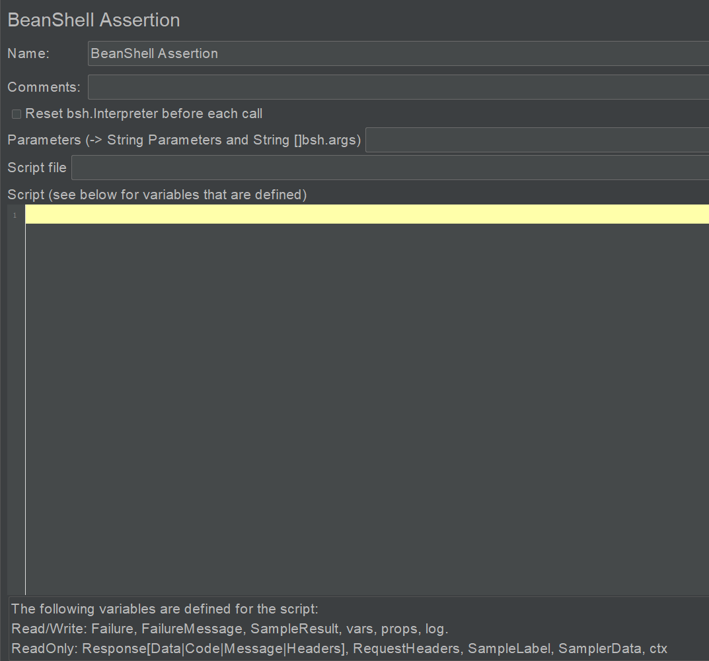

12 JMeter响应断言够用了¶

JMeter断言用来对服务器的响应数据进行验证，其中的响应断言基本能完成大多数的验证工作，但是JMeter还是提供了适用于多个不同场景的断言元件，一共16个，如下图所示：

Response Assertion¶
最最最常用的断言，足够满足工作需要。
Apply to：断言应用范围。
子取样器可能是JMeter手动设置的，可能是重定向，可能是嵌入资源（images、iframe等）。
Field to Test：哪部分响应域参与断言。
Ignore Status：多个响应断言，如果当前断言失败了，勾选此选项可以忽略此响应结果，继续下一个断言。
Patterns to Test：
Contains：实际响应包括预期匹配内容，支持正则表达式。
Matchs：实际响应完全匹配预期匹配内容，大小写不敏感，支持正则表达式。
Equals：实际响应完全等于预期匹配内容，大小写敏感，只支持字符串，不支持正则表达式。
Substring：实际响应包括预期匹配内容，大小写敏感，只支持字符串，不支持正则表达式。
Not：对测试模式进行否定。
Or：将多个测试模式以逻辑“或”组合起来。
Add：添加需要匹配的字符串或者正则表达式。
Custom failure message：自定义失败信息。
多模式断言，Add可以添加多个断言模式，假设有模式p1，p2，p3：
默认And：p1 and p2 and p3
只选Not：(not p1) and (not p2) and (not p3)
只选Or：p1 or p2 or p3
同时选Not和Or：(not p1) or (not p2) or (not p3)
JSON Assertion¶
JSONPath是一个JSON查询语言，可以用来快速查找节点，语法参考：
https://github.com/alibaba/fastjson/wiki/JSONPath
Assert JSON Path exists：JSONPath表达式。
Additionally assert value：普通匹配。
Match as regular expression：正则匹配。
Expected Value：预期值。
Expect null：预期为null。
Invert assertion（will fail if above conditions met）：反转断言，如果上面的条件满足就断言失败。
Size Assertion¶
验证响应数据Size大小。
Apply to：断言应用范围。
Response Size Field to Test：哪部分响应域参与断言。
Size to Assert：断言时Size的阀值设置。
JSR223 Assertion¶
支持其他脚本语言如JavaScript。
XPath2 Assertion¶
2.0版本的XPath断言，可以验证WebServices协议接口响应的XML格式数据。
Binary Response Assertion¶
验证二进制响应数据。
Compare Assertion¶
因为会消耗较多资源，一般不建议使用，仅仅用来调试。
Compare Assertion进行设置，需要配合Comparision Assertion Visualizer进行断言结果显示。
Duration Assertion¶
验证Sampler运行测试消耗的时间，比如断言持续10s，如果实际耗时30秒，就会断言失败。
HTML Assertion¶
用的比较少。
JTidy是HTML Tidy的Java实现版本，提供了HTML的语法检查器，可以用来解析HTML代码，可以用来清除格式不好和不对的HTML，类似于一个处理HTML文件的DOM解析器。

XPath Assertion¶
可以验证WebServices协议接口响应的XML格式数据。
BeanShell Assertion¶

BeanShell作为脚本语言能够方便地调用Java类，在断言元件中，可以访问JMeter的诸多属性，具体有：
log，写日志。
SampleResult，获取响应数据、响应码等。
Response，获取响应数据。
Failure，设置断言成功与否，Boolean类型。
FailureMessage，设置失败信息。
ResponseData，响应数据。
ResponseCode，响应码。
ResponseMessage，响应信息。
ResponseHeaders，响应头信息。
RequestHeaders，请求头信息。
SampleLabel，取样器Label信息。
SamplerData，发送给服务器的数据。
Ctx（JMeterContext），JMeter上下文信息，获取线程数、线程号等信息。
Vars（JMeterVariables），获取JMeter中定义的变量，或者设置变量。
Props（JMeterProperties），获取JMeter中的属性，或者设置属性。
示例：
SampleResult.getRequestHeaders()
SampleResult.setSuccessful(false)
SampleResult.getResponseDataAsString()
SampleResult.getResponseCode()
SampleResult.getResponseMessage()
小结¶
本文对JMeter所有断言元件进行了介绍，其中的响应断言已经足够使用了，对于RESTful接口来说，JSON格式响应数据可以使用JSON Assertion和JSON JMESPath Assertion，其他元件则用的比较少。另外BeanShell Assertion在编写基于JMeter的测试平台时可能会用到。